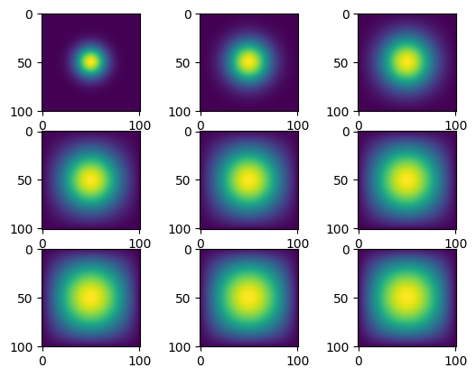

import inspect
import time
from matplotlib import pyplot as plt
from heat_equation import *
N = 101 # grid size
epsilon = 0.2 # step size
iter = 2701 # number of iterations
# construct initial condition: 1 unit of heat at midpoint.
u0 = np.zeros((N, N))
u0[int(N/2), int(N/2)] = 1.0In this blog post, I will be describing four different ways of simulating two-dimensional heat diffusion.
Getting Started
We first import all of the necessary packages and initialize the starting grid.
Matrix multiplication
We construct a finite-differences matrix based on a discretization of the 2D heat equation in get_A.
print(inspect.getsource(get_A))def get_A(N):
"""Returns the finite difference matrix A for advance_time_matvecmul
Args:
N: Size of the returned matrix
Returns:
N x N matrix A for advance_time_matvecmul
"""
n = N * N
diagonals = [-4 * np.ones(n), np.ones(n-1), np.ones(n-1), np.ones(n-N), np.ones(n-N)]
diagonals[1][(N-1)::N] = 0
diagonals[2][(N-1)::N] = 0
return np.diag(diagonals[0]) + np.diag(diagonals[1], 1) + np.diag(diagonals[2], -1) + np.diag(diagonals[3], N) + np.diag(diagonals[4], -N)
We can then call get_A in advance_time_matvecmul to generate the next step of the simulation via matrix-vector multiplcation with the flattened grid.
print(inspect.getsource(advance_time_matvecmul))def advance_time_matvecmul(A, u, epsilon):
"""Advances the simulation by one timestep, via matrix-vector multiplication
Args:
A: The 2d finite difference matrix
u: N x N grid state at timestep k
epsilon: stability constant
Returns:
N x N Grid state at timestep k+1
"""
N = u.shape[0]
u = u + epsilon * (A @ u.flatten()).reshape((N, N))
return u
With these two functions, we can run the simulation for 2700 timesteps and plot every 300th iteration. The execution time for calculating the timesteps can also be displayed by using the time module. We will repeat this segment for each simulation method so that we can compare them.
u = u0 # make a copy of u0
figs = [None]*9 # list of in-progress figures
start_time = time.time()
A = get_A(N) # get the finite difference matrix
for i in range(1,iter+1):
u = advance_time_matvecmul(A, u, epsilon) # advance by one timestep
if i % 300 == 0:
figs[(i//300) - 1] = u # save every 300th iteration
print("--- %s seconds ---" % (time.time() - start_time)) # print execution time
fig, axs = plt.subplots(3,3)
for i in range(9):
axs[i//3][i%3].imshow(figs[i]) # plot in-progress figures--- 89.75409722328186 seconds ---
Matrix Multiplication with JAX Sparse Matrix
Since many of the entries in matrix A are zeroes, we can use a sparse matrix to improve execution time. We accomplish this by calling get_A and converting the returned matrix to a sparse matrix.
print(inspect.getsource(get_sparse_A))def get_sparse_A(N):
"""Returns the sparse matrix A for advance_time_matvecmul_jax
Args:
N: Size of the returned matrix
Returns:
N x N sparsematrix A for advance_time_matvecmul
"""
# call get_A to get A, convert it to a jax array, then convert that to a sparse matrix
return sparse.BCOO.fromdense(jnp.array(get_A(N)))
u = u0
figs = [None]*9
start_time = time.time()
A = get_sparse_A(N)
for i in range(1,iter+1):
u = advance_time_matvecmul_jax(A, u, epsilon)
if i % 300 == 0:
figs[(i//300) - 1] = u
print("--- %s seconds ---" % (time.time() - start_time))
fig, axs = plt.subplots(3,3)
for i in range(9):
axs[i//3][i%3].imshow(figs[i])--- 7.294459819793701 seconds ---Direct Operation with Numpy
It turns out that in this particular scenario, directly calculation with numpy vectorized operations is faster than matrix multiplication. We first pad the matrix with zeroes all around to simulate the boundary conditions. After flattening the matrix, we can use np.roll to align all of the necessary cells needed to compute each cell of the simulation. After computing the next timestep, we can reshape the matrix back into a square and return the non-boundary part of the simulation.
print(inspect.getsource(advance_time_numpy))def advance_time_numpy(u, alpha):
"""Advances the simulation by one timestep, via numpy techniques
Args:
u: N x N grid state at timestep k
alpha: stability constant
Returns:
N x N Grid state at timestep k+1
"""
#Get N (grid size)
N = u.shape[0]
#pad u with 0s to represent boundary conditions and flatten
u_old = np.pad(u,((1,1), (1,1)), constant_values=0).flatten()
u_new = u_old + alpha*(np.roll(u_old,N+2) # u_i-1,j
+ np.roll(u_old,-(N+2)) # u_i+1,j
+ np.roll(u_old,-1) # u_i,j+1
+ np.roll(u_old,1) # u_i,j-1
- 4*u_old) #4 * u_i,j
#reshape array into a square then return only the portion that is part of the simulation
return np.reshape(u_new,(N+2,N+2))[1:N+1,1:N+1]
u = u0
figs = [None]*9
start_time = time.time()
for i in range(1,iter+1):
u = advance_time_numpy(u, epsilon)
if i % 300 == 0:
figs[(i//300) - 1] = u
print("--- %s seconds ---" % (time.time() - start_time))
fig, axs = plt.subplots(3,3)
for i in range(9):
axs[i//3][i%3].imshow(figs[i])--- 0.37366628646850586 seconds ---Direct Operation with JAX
We can use just-in-time compilation to speed up the computation by replacing all numpy functions with their jax_numpy equivalents.
print(inspect.getsource(advance_time_jax))@jit
def advance_time_jax(u, alpha):
#essentially the same as advance_time_numpy, but uses jax numpy functions instead
N = u.shape[0]
u_old = jnp.pad(u,((1,1), (1,1)), constant_values=0).flatten()
u_new = u_old + alpha*(jnp.roll(u_old,N+2)
+ jnp.roll(u_old,-(N+2))
+ jnp.roll(u_old,-1)
+ jnp.roll(u_old,1)
- 4*u_old)
return jnp.reshape(u_new,(N+2,N+2))[1:N+1,1:N+1]
u = u0
figs = [None]*9
start_time = time.time()
for i in range(1,iter+1):
u = advance_time_jax(u, epsilon)
if i % 300 == 0:
figs[(i//300) - 1] = u
print("--- %s seconds ---" % (time.time() - start_time))
fig, axs = plt.subplots(3,3)
for i in range(9):
axs[i//3][i%3].imshow(figs[i])--- 0.17978262901306152 seconds ---
Conclusion
Overall, each method was faster than the one before it, with direct operation with JAX being the fastest. It was also the most intuitive for me to write, since it relies only on element-by-element addition rather than matrix multiplication.